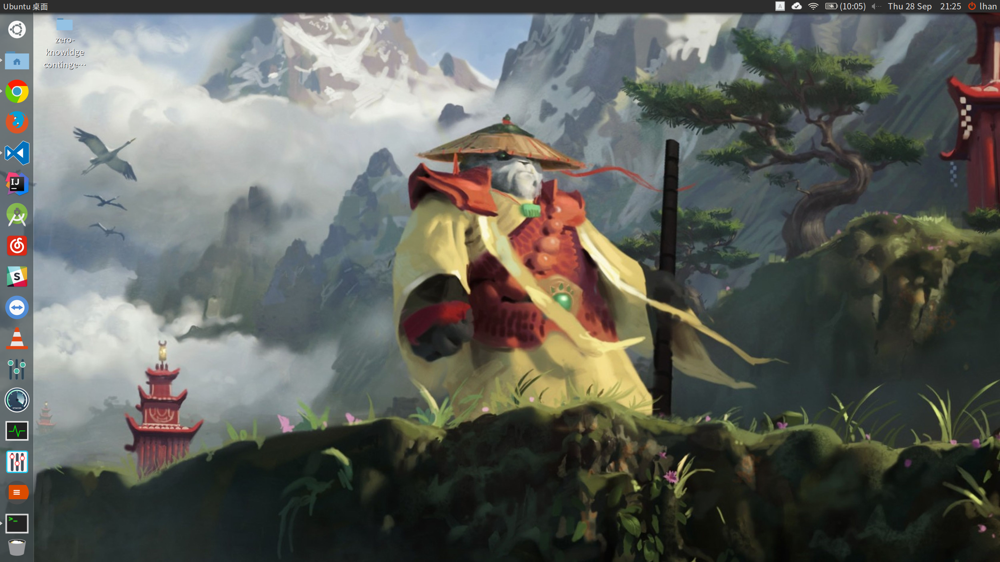
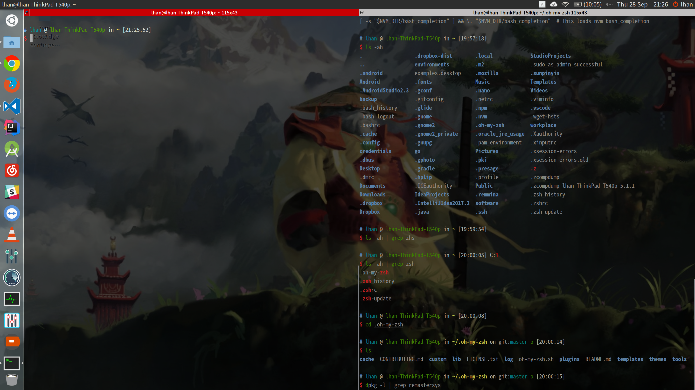
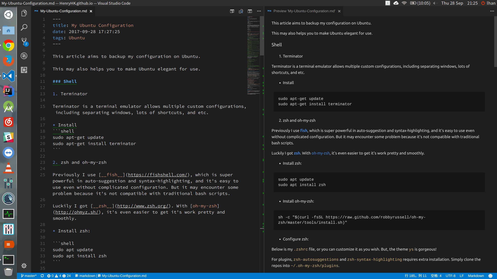

My Ubuntu Configuration
This article aims to backup my configuration on Ubuntu.
This may also helps you to make Ubuntu elegant for use.
Shell
Terminator
Terminator is a terminal emulator allows multiple custom configurations, including separating windows, lots of shortcuts, and etc.
- Install
sudo apt-get update
sudo apt-get install terminator
Another great choice is Guake. But you can set Terminator behave the same way as Guake by shortcuts.
zsh and oh-my-zsh
Previously I use fish, which is super powerful in auto-suggestion and syntax-highlighting, and it’s easy to use even without complicated configuration. But it may encounter some problem because it’s not compatible with traditional bash scripts.
Luckily I got zsh. With oh-my-zsh, it’s even easier to get it’s work pretty and smoothly.
Install zsh:
sudo apt update
sudo apt install zsh
Install oh-my-zsh:
sh -c "$(curl -fsSL https://raw.github.com/robbyrussell/oh-my-zsh/master/tools/install.sh)"
Configure zsh:
Below is my .zshrc file, or you can customize it as you wish. But, the theme ys is gorgeous!
For plugins, zsh-autosuggestions and zsh-syntax-highlighting requires extra installation. Simply clone the repos into ~/.oh-my-zsh/plugins.
You can find my .zshrc file here.
reopen your shell (or source .zshrc)and then it should work.
Install JDK, Node, and all kinds of environments and softwares
When I’m a newbee of Linux, I install almost everything into ‘su’ folders, which leads to lots of problems later.
So there should be a bottom line in every Linux user’s mind that all applications or activities in Linux should be granted the proper rights.
Because I only want to set up environments for my personal usage, I create two folders under my user directory which is /home/lhan/environments and /home/lhan/softwares. This is pretty since I never need to do sudo ./studio.sh to make my android studio running or do sudo ./idea.sh to update my IntelliJ.
For node installation, nvm is my only recommendation.
Also, there are some pretty good software on Ubuntu to make it a good OS:
-
VLC - media player or simply
sudo apt-get install vlc -
fcitx - input method framework supporting many Chinese input methods
-
albert - A spotlight-like software on Linux (P.S. if you are using Ubuntu, you may need CompizConfig Settings Manager in order to diable
altrelated hotkeys to usealt+spaceshortcuts for calling albert)
All the above software can be easily installed and requires few configurations.
If you encounter any dependency problems when install .deb, try the following commands:
sudo dpkg -i name_of_package.deb
sudo apt-get install -f
This will resolves dependencies problems automatically.
Themes, Icons, and Fonts
Themes & Icons
I use Flatabulous theme. This is gorgeous and is perfect in my 15.6’ 3k resolution display. As for icons, I use ultra-flat-icons as recommended by the author of Flatabulous.
Fonts
For fonts, as I use Simplified Chinese and English in my daily life, noto fonts is the best choice. When it comes to programming, I use Source Code Pro.
Screenshots


